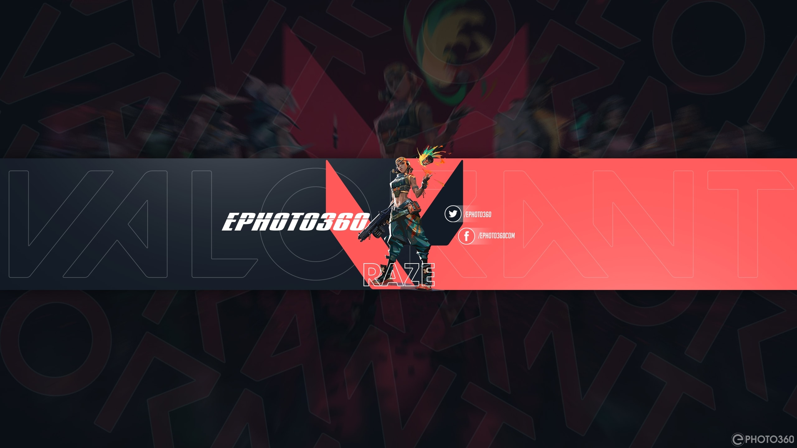

I was summoned into this pitiful mortal realm in 1991 and
raised by marauding wolves. Like most younglings I had grand
ambitions toward world domination, but as I matured and came
to understand more about this odd realm I realised that ruling
it would likely be tedious and involve far too much paperwork.
And so I tempered by dreams to just playing a lot of games and
trying not to punch every human I came across. Thus far I
achieved one of those dreams.
Something clearly went wrong with my summoning because I came
into this world with Cystic Fibrosis. It’s a bit of a pain in
the arse. Due to this my furry parents made the choice to
home-school me themselves because schools are filled with
viruses, and I’m a tad more vulnerable to them. Every time I
get one I add a bit more scarring to my lungs, although I hear
chicks dig scars, so maybe that’s a good thing. Plus, at the
tender age of 5 I was still attempting to eat most humans I
came across and my parents made the choice to home-school me
themselves because schools are filled with viruses, and I’m a
tad more vulnerable to them. Every time I get one I add a bit
more scarring to my lungs, although I hear chicks dig scars,
so maybe that’s a good thing. Plus, at the tender age of 5 I
was still attempting to eat most humans I came across and my
parents didn’t fancy dealing with all that faff.
Somewhere along the line my wolf parents acquired electricity
and a TV, and thus my first gaming memories are of a Sega
Genesis. What a beautiful console it was, and I spent hours
and hours playing the likes of Sonic the Hedgehog, Alex the
Kidd and Streets of Rage.

My four-legged father was big on technology, and so we had
computers fairly early on. It was on that and through my sire
that I learned of new games like Duke Nukem, Max Payne and
Total Annihilation. We used to attend to 24-hour parties where
I was inevitably found playing Jazz Jackrabbit on our friend’s
PC rather than talking to pesky human fools.
Next up was an original Playstation where I spent my time
playing Mortal Kombat, racing against my older brother in
Colin McRae Rally and running around in Grand Theft Auto 3.
For a long while I didn’t have a memory card, so I replayed
the opening hours of games over and over and over again. I
fell in love with the likes of Legacy of Kain: Soul Reaver,
Tony Hawk’s Pro Skater, Matt Hoffman’s Pro BMX, Command &
Conquer and playing around in Music 2000.
Then came my Playstation 2, a whole new generation of games to
play. I remember it less, though. My truly formative time came
with the Xbox 360 of which I have the strongest memories. I
think this was the generation that truly cemented by love of
games. The first game I played on it was Gears of War,
followed by The Elder Scrolls: Oblivion, a game in which I’ve
spent hundreds of hours over the years.
There was no eureka moment when I started writing about games.
It just seemed like a fun thing to do one day, and I never got
around to stopping. Here we are years later, and by complete
accident and a series of unfortunate events I’ve wound up
running a website all about reviewing games. For reasons
unknown to me, you human weirdos seem to like reading some of
my ramblings, and so I keep doing it. Maybe one day I’ll stop
and get a life. I’ve heard they are quite good.
And so the poorly named http://www.wolfsgamingblog.com was
born. I regret the choice of name, but at the time it was more
of a blog. Now that I’m fortunate enough to deal with
companies and get review code and hardware, the name is a bit
problematic because many places instantly write me off to to
the “blog” part. I still can’t get an article posted on N4G
without it being instantly reported.
My aim is to deliver the most honest reviews I can. I don’t
run this site for profit except for the occasion guest post
which I always clearly label. I try my best to deliver honest
opinions on whatever I play. Sometimes, those opinions agree
with everyone else, sometimes they don’t. Quite often they
deviate from the mainstream sites say.